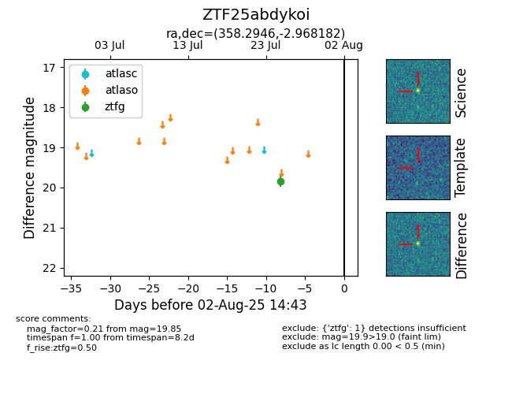

Target ZTF25abdykoi at 2025-08-05 23:02, see:
FINK: fink-portal.org/ZTF25abdykoi
Lasair: lasair-ztf.lsst.ac.uk/objects/ZTF25abdykoi
ALeRCE: alerce.online/object/ZTF25abdykoi
alt names
ZTF25abdykoi (ztf,fink)
coordinates:
equatorial (ra, dec) = (358.2946,-2.96818)
galactic (l, b) = (90.4611,-62.10945)
photometry
last ztfg=19.85
1 ztfg detections
